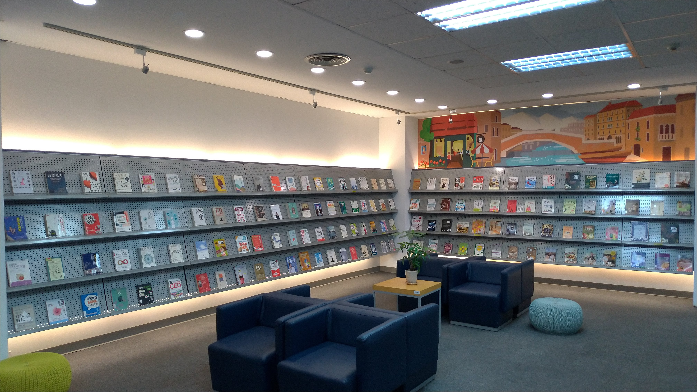

第三站：新書展示區．書香新鮮直送！

書也有「出生地」？ 當然！歡迎來到圖書館最有「新書氣息」的一隅——新書展示區。
這裡的書彷彿剛從出版社熱騰騰出爐，書頁間還帶著油墨與夢想的香氣，靜靜等著與第一位讀者邂逅。彷彿訴說著：「快來翻開我，讓故事開始吧！」
你可以悠哉地窩進沙發，在書香中偷得一刻靜謐，也可以直接外借帶回家，開啟一場與文字的初戀。新書一上架即可外借，先來先看，完全不設限。
書看完了怎麼辦？別擔心，圖書館門口設有 24 小時還書箱，無論清晨日出，或是深夜星辰，都能悄悄完成這場「圖書歸還任務」，讓每一次借閱都有始有終，不留遺憾。
才剛暖好書香味，我們即將轉身，直奔科技與自學的情報核心。